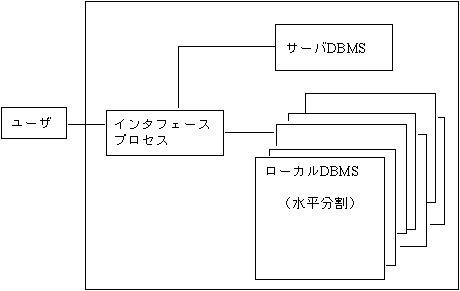

(87) 並列データベース管理システム : Kappa (KLIC版)
マ シ ン：UNIXマシン
環 境：UNIX, KLIC
言 語：KL1, C
ソース量：6 MB
文 書：マニュアル (日本語・英語)
概要
Kappa は、非正規関係モデルに基づく並列データベース管理システムであり,
KLIC上で動作する。
構成

機能
- 非正規関係モデル
- 知識情報処理システムや遺伝子情報処理システムの複雑な構造のデータ
を管理するために、広く利用されている関係モデルを拡張した非正規関係モデ
ルを採用している。
- データ配置と並列処理
- 各ノード毎に問合せ処理能力をもっているため、非正規関係の分散配置
や、一つの非正規関係を複数のノードに分ける水平分割によって、ノード間の
並列処理が可能になる。
- UNIXマシン上で動作
- KLIC を用いることにより、UNIX オペレーティング・システムの基本部
分が動作する計算機システムで Kappa を利用することができる。
- 例題プログラム irpr
- 名簿管理システム（通称irpr）が、例題プログラムとして添付されている。
ＦＴＰ
- README.
- 並列データベース管理システム : Kappa (KLIC版) [765K]

www-admin@icot.or.jp